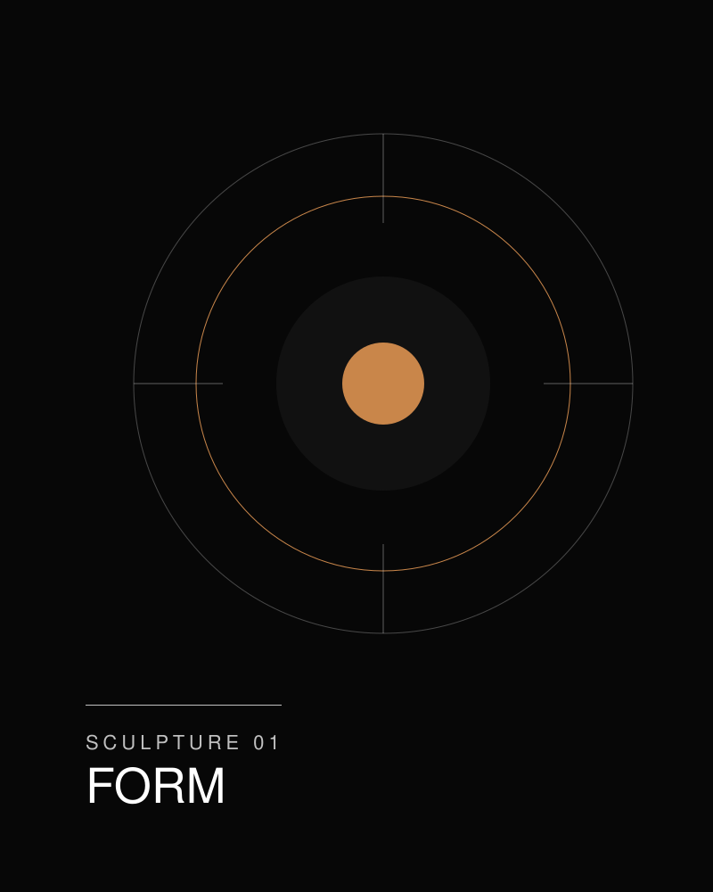
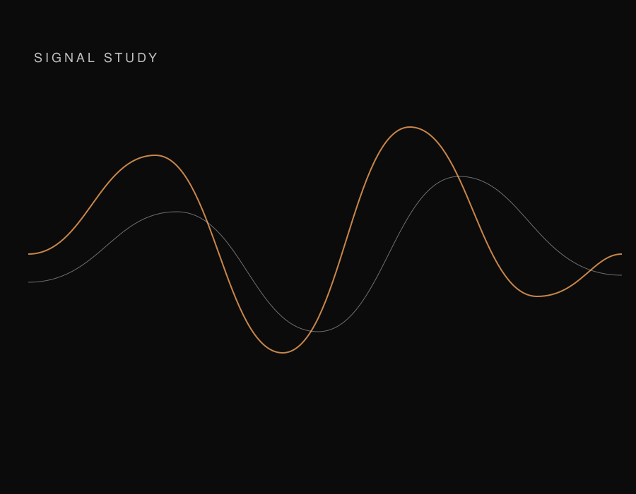
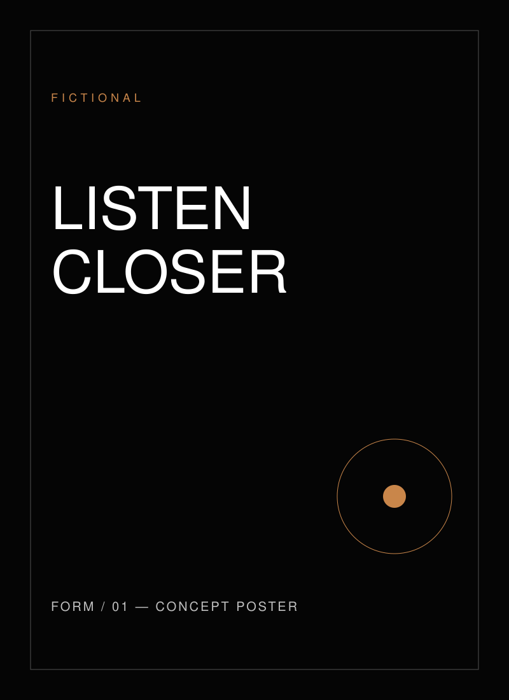
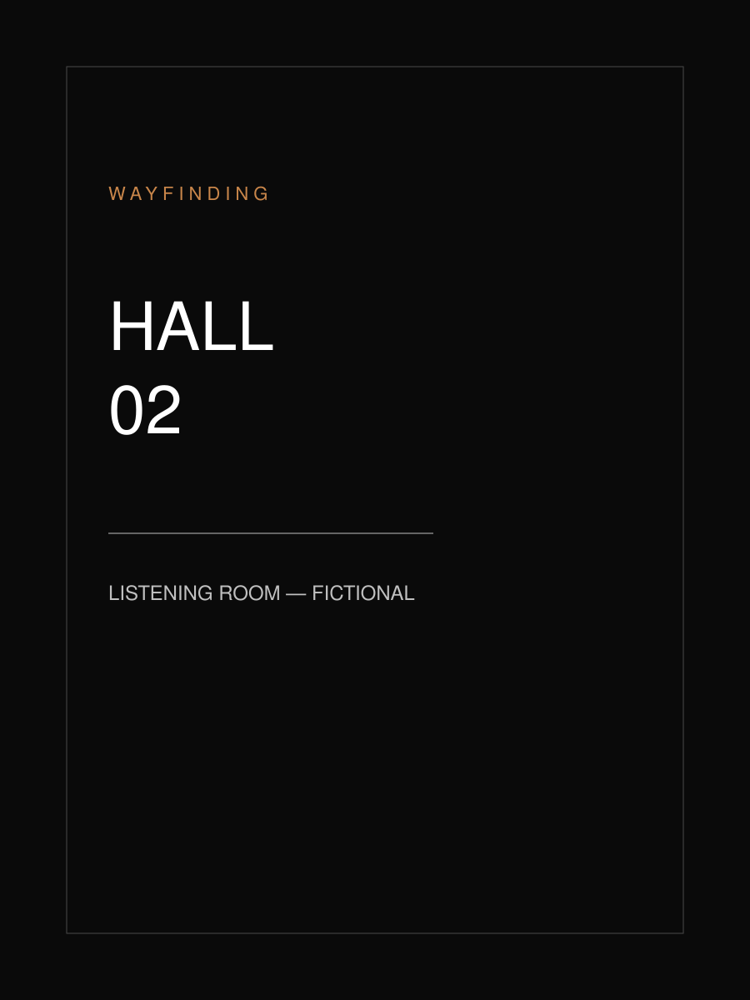

Detailed Group — Design Exploration
One story. Many expressions.
An exploration of how ideas become experiences, and how communication connects every moment of a brand's story.
Scroll


02 — Thesis
A project isn't a collection of deliverables. It's a connected story.
A portfolio organized as a story has a different job from a folder of files. It has to show that a product narrative, a launch, a room, and a presentation can be one idea under different kinds of pressure.
This page follows that path with a fictional personal-audio brand. The brand is not a client. The work was not delivered. The sequence is here so the structure can be judged on its own.
- The idea is the constant.
- The setting changes the form.
- The voice should still be recognizable.
03 — Fictional project
Illustrative example. Detailed Group did not perform this work.
FORM / 01
Integrated Communications — Concept Demonstration
A speculative personal-audio brand exploring the relationship between sound, identity, and human connection.
FORM / 01 exists only inside this prototype. The name, the object, and the materials are invented. What follows is one idea told four ways: a product story, launch communications, an event environment, and an investor narrative.
04 — The system
One idea, four settings.
Move across the index. Each setting keeps the same fictional premise and changes the distance between the idea and its audience. Choosing one opens that chapter.
05 — Product Story
Hold the idea close enough to see it.
In a product story, the object stays in frame. A still form, a caption, and a few plain facts are enough to open the world before the story moves into public channels.
The drawing stands in for photography a real project would commission. It sets a material range — charcoal, silver, and one copper note — and then gets out of the way.
A signal, before it is a campaign.
The second beat stays with the object. A waveform is not a feature list. It is a way of showing that the fictional brand treats sound as a relationship, not a specification.
06 — Launch Communications
The same sentence, at a public scale.
Launch communications change the crop. One fictional line has to survive a wide image, a square post, a poster, and a short motion study. Nothing here was published.
07 — Event Experience
Let the story occupy a room.
This is the most spatial passage in the demonstration. The ground warms, and one image grows inside its frame as it arrives. The stage and the sign describe a listening room that does not exist. There is no venue, date, or audience.

Spatial identity
Signage, beam, and a quieter perimeter.
The room uses the same copper note as the object, then gives it height. A beam, a horizon line, and a wayfinding panel are enough to suggest a place without inventing an event that happened.
08 — Investor Narrative
Slow the story down until it can be read.
An investor chapter is quieter. The audience is reading, not arriving. These layouts show how the same identity can hold a cover, a chart, and a system slide. Every figure is a placeholder. There is no company and no result behind them.
- 01 Object
- 02 Signal
- 03 Room
- 04 Sequence
The diagram names the order of the demonstration. It is not a business model, a timeline, or a measure of performance.
09 — One system
Different moments.
One coherent story.
The four passages use different scales. They stay one system because the object, the copper note, and the sentence recur. A change of format is not a change of brand.
10 — Review
A more expressive way to tell the story of the work.
This concept explores how Detailed Group's editorial approach can evolve into a more immersive portfolio experience.
DESIGN EXPLORATION / CONCEPT ONLY
Original vector artwork made for this prototype. No client photography, no live campaign, and no project result is represented.